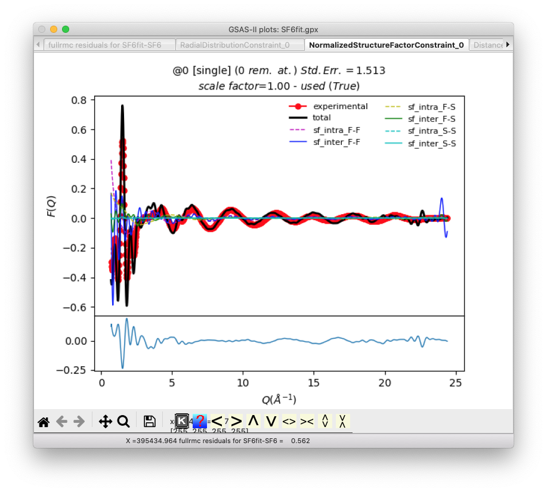
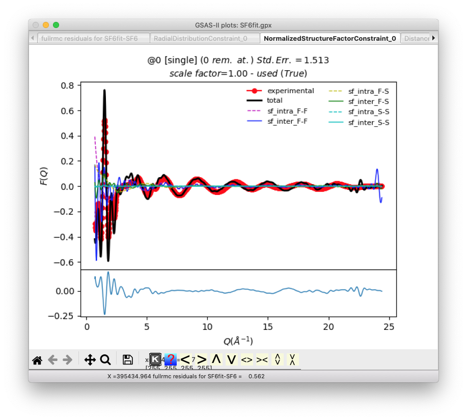

GSAS-II PDF fitting
with fullrmc: SF6
This tutorial shows use of GSAS-II and fullrmc
(FUndamental Library Language for Reverse Monte
Carlo. If you use this, please cite
Atomic Stochastic Modeling & Optimization
with fullrmc, B. Aoun, J. Appl. Cryst. 2022, (in
press).
Fullrmc, a Rigid Body Reverse Monte Carlo
Modeling Package Enabled with Machine Learning and Artificial Intelligence, B.
Aoun, Jour. Comp. Chem. 2016, 37, 1102-1111. DOI: https://doi.org/10.1002/jcc.24304).
For this
tutorial, some familiarity with basic use (phase import/creation) of GSAS-II is
expected.
Background on fullrmc
Both RMCProfile and
fullrmc are used to fit large box structural models to pair distribution
function (PDF) results and the S(Q) diffraction patterns. While RMCProfile provides a specific way to do this, fullrmc
differs in that it implements library of functions for stochastic modeling,
where atomistic models are fit to experimental, theoretical and in some cases ad
hoc criteria. The fullrmc framework allows a user to completely customize
the fitting approach by designing a process for performing the fit. The fullrmc
library provides computational building blocks to perform the fit. To use the
full power of fullrmc, one needs to understand the fullrmc software framework.
The web site http://bachiraoun.github.io/fullrmc
documents the fullrmc scripting language and provides introductory videos.
GSAS-II provides a GUI with access to a small fraction of the capabilities in
fullrmc. GSAS-II will create a fairly simple script
incorporating an atomic model exported from GSAS-II that runs fullrmc in a
fairly straightforward manner. More experienced users may wish to use this
script as a starting point to create much more sophisticated fitting
approaches.
Note that GSAS-II requires fullrmc v5.0+, which
is distributed as separate Python executable for 64-bit versions of Windows, Mac and Linux with Intel-compatible processors (or the
Rosetta emulator on Apple Silicon). There is an older version of fullrmc (v4.x)
available as open source in Github, but it is not
compatible with the scripts GSAS-II creates. The latest versions of fullrmc,
along with a complete GUI for all fullrmc features, is available for cloud computing via fullrmc.com. This cloud version also provides
proprietary features such as machine learning.
Introduction
Here we look at several approaches to fitting
large box structural models for Sulfur
hexafluoride (SF6) against PDF results, as well as the S(Q) diffraction
patterns the PDF is derived from. While the PDF and S(Q) are based on the same
measurements and in theory contain exactly the same
information, they are each sensitive to different aspects of the structural
model and thus fitting against both is a more stringent experimental constraint
than fitting against only one. The first approach largely duplicates the
fitting done with the same data in RMCProfile Tutorial I, but the latter fits use SF6 rigid molecules in a process cannot be duplicated
with RMCProfile.
Installing fullrmc
When fullrmc is selected on the Phase RMC tab
(as will be done below), GSAS-II will look for a fullrmc program in a number of
locations (documented
here). If this is not found, the program will offer to install it for you,
as below.
If Yes is pressed, a message like the one
below in the console window. The file name for the download will vary depending
on the type of computer you have and the location where GSAS-II is installed.
The download time may vary from many minutes to fractions of a minute.
Starting
installation of fullrmc
Downloading
from https://github.com/bachiraoun/fullrmc/tree/master/standalones
Creating
/Users/toby/G2/trunk/AllBinaries/mac_64_p3.9_n1.19/fullrmc500_3p8p6_macOS-10p16-x86_64-i386-64bit
This
may take a while...
...Download
completed
It is also possible to install this software
yourself, from the location where it is made available, https://github.com/bachiraoun/fullrmc/tree/master/standalones.
If this is done manually, either install it into the search path described in
the GSAS-II
help or define the GSAS-II configuration
variable fullrmc_exec.
It has been seen that the windows .exe file did
not run at least one minimal Windows installation without installation of
Microsoft-supplied .DLL file(s). Running the file https://aka.ms/vs/17/release/vc_redist.x64.exe
from https://docs.microsoft.com/en-us/cpp/windows/latest-supported-vc-redist
installs the Microsoft C and C++ (MSVC) runtime libraries and addressed this
problem. If any of these binary images do not run for you, we will be unable to
help.
1. Rietveld Refinement of Sulfur hexafluoride (SF6):
This step is optional, but if performed you
will follow the steps in RMCProfile
Tutorial I
steps 1-6.
2. Reverse Monte Carlo Simulation of SF6 with Bond constraints
Step 2.1. Import phase
Start GSAS-II. Use the Import/Phase/from GSAS .EXP file menu item to read the phase information
for SF6 into the current GSAS-II project from file SF6_190K.EXP.
[Alternatively, create a new phase with Space
group Im3m (or equivalently Im-3m). While GSAS-II
will accept the space group without inclusion of spaces, the correct input
would separate the symmetry axes with spaces (I m 3
m). Enter the one lattice parameter, a=5.887. There are two atoms: S atom at
0,0,0 and a F at 0.251,0,0.]
Name the phase SF6 and save the project as
SF6fit.
Step 2.2. Setup fullrmc
Select the SF6 phase tree item, if not already
selected; then select the RMC tab. On this window, select fullrmc.
GSAS-II will test to see if a Python
interpreter that includes fullrmc is found. If not, you will be offered the
chance to install the software, as above. If fullrmc
still cannot be accessed, an error message is displayed in the window.
Here we will perform this fit with a quite
small superlattice (so that this fit finishes in minutes rather than the hours
needed for a better model) and likewise with a relatively small number of
steps. We will also use hard constraints on the S-F bond lengths and prevent
the SF6 units from distorting too much, by setting limits on the F-F
distances. We will also provide both G(r) and F(Q) input to fit against. To do
this provide the following input:
Use a 5x5x5 supercell by setting
the three lattice multipliers to 5
Run 100 cycles of 5,000 steps
(500,000 steps total). Note that after each cycle, statistics on state of the
model are saved for plotting
Select to ignore any previous
fullrmc runs for this project by selecting the Restart fullrmc option (this
has no effect for the first fullrmc run for a project).
Create distance constraints to place
hard limits on the maximum and minimum S-F and F-F distances:
o
In the second column labeled S-F set the min and to values to 1.37 & 1.74
o
In the third column, labeled F-F set the min and to values to 2.0 & 2.42.
Load the PDF and structure factor
file
o
Use the Neutron G(r) Select file button to read the sf6_190_gr.dat file.
o
Since this is a Keen-type G(r) as used RMCProfile
type, the file type field can be left as the default choice, G(r)-RMCProfile.
o
Use the neutron S(Q)-1 Select file button to read the sf6_190_fq.dat file.
o
This is a RMCProfile F(Q) file, which is also
the default file type.
Note
that these files are slightly different from the versions of the files used in
the RMCProfile Tutorial I. For
fullrmc, the first two header lines in the file have been modified to be
comments by starting them with a # character.
When complete, the input should look as below:
Step 2.3. Launch fullrmc
Use the Operations => Setup RMC menu
command. This creates a file containing a script of fullrmc commands named SF6fit-SF6-fullrmc.py, placed in the same
directory that was used for the .gpx file. Note that
this file is named for both the project (SF6fit) and the phase (SF6).
Then use the Operations =>
Execute menu command to start fullrmc. This creates either a shell script (fullrmc.sh)
or a Windows .bat script (fullrmc.bat) to run fullrmc. A reminder on citations
is displayed, as below:
The fullrmc script is then launched in a
separate Python process with its own console window. After a brief delay, this
will start scrolling status messages:
Step 2.4. Plot fullrmc results
Note that in the above input, we selected that
fitting would be done with 5K steps/cycle. This means that every 5000 steps,
the fullrmc output is saved so that plots can be generated; it is not necessary
to wait for the fullrmc run to complete before plotting results. Use the
Operations => Plot menu command to see this output, but notes that these
plots are not updated automatically. Repeat the Operations => Plot menu
command to update the plots. When this menu command is used, the selection
window shown below allows plots to be selected:
The first listed plot, Constraints vs. Steps
shows the fullrmc cost functions as the run progresses.
After 10 to perhaps 30 minutes depending on the
speed of your computer, the run will complete the 500,000 requested steps. The
run of fullrmc is not ended, but rather the terminal window used to run fullrmc
remains open and additional fullrmc commands can be typed to create specialized
plots or perform other actions within fullrmc.
As one example, use of the command
>>> ENGINE.export_snapshot("snapshot.file")
(>>>
is a prompt from Python) will create a file with the details of the current
model which can be used in fullrmc or transferred to the cloud-based fullrmc
system (at fullrmc.com). If the VMD
plotting software is installed, the ending atomic configuration can be
displayed with command
>>> ENGINE.visualize()
To
finish fullrmc type:
>>> exit()
If the Operations => Plot menu command is
used after the run of 500,000 steps is complete, the final version of this plot
above will appear as below:
Zooming in on the final section of the plot,
as below, shows that the fit quality is still dropping significantly, so even
with this relatively small modeling region (5x5x5), 500,000 steps are not
enough to optimize the fit.
Additional plots show the quality of the fits
for G(r) and S(Q):
 

The remaining plots examine the constraints on
distances.
The run can be continued by unselecting the
Restart fullrmc Engine and then using Operations => Setup RMC and
Execute menu commands, but note that with this relatively small modeling space,
results will be limited in quality.
Step 2.5: Transfer fit results inside GSAS-II
The final atom positions generated in fullrmc
can be imported back into GSAS-II in one of two ways for viewing or other
possible post-analysis. The Operations => Load
Supercell menu command will input the atoms in the big box used for the
model as a new phase. Here this will result in a structure with 1750 atoms in a
unit cell with 29.4 sides. One the fit results are loaded, a new phase named
SF6_fullrmc will be created. Click on this phase to view it and then click on
the Draw Atoms tab to transfer the loaded atoms into the draw array then
click on Draw Options to update the structure plot. The figure below shows
the structure after using the sliders to move the Camera Distance to ~110 ,
the Z-clipping to >35 and the van der Waals scale to about 0.2.

In contrast, the Operations
=> Superimpose into cell menu command places 1750 the atoms from the
supercell into the original 5.9 crystallographic cell. This menu command must
be done from the original SF6 phase, not the full cell phase that was
created in the previous step (this is because GSAS-II will look for fullrmc
output that is named for both the .gpx file and the
phase used to create it.) Since the previous step created phase named
SF6_fullrmc, this new phase will be named SF6_fullrmc_1 so that phase names are
unique. After clicking on Draw Atoms and then Draw Options, the
superimposed cell appears as displayed below, again after the van der Waals
scale is lowered to about 0.05.
Step 2.6: Continue the fit (Optional)
Should one wish to see further improvement, the
fit can be continued by unselecting the Restart fullrmc Engine and then using
the Operations => Setup RMC and Execute menu
commands to continue from where the previous run ended. Note that with this
relatively small modeling size, results will be limited in quality.
3. Preparation for Rigid Body fitting with fullrmc
3.1 Introduction
The previous fit in fullrmc, as well as the
similar tutorial for RMCProfile, create
energetically implausible structures for SF6 molecules. The reason
the previous model is unrealistic is that the packing forces that cause the
molecules to shift from the crystallographic high symmetry positions and
orientations are too small to cause any significant distortion of the SF6
molecule from its idealized octahedral geometry. Vibrational modes do allow for
instantaneous distortions, by bending the F-S-F angles and
stretching/compressing the S-F bonds, these displacements are typically small.
The unrealistic model found in RMCProfile as well as here in Step 2, results from the
fitting process using atomic shifts to treat two different phenomena, static
and vibrational disorder. Even at 0 K, atoms are in constant motion
and this gives rise to broadening of PDF peaks. Note that here it is this
instantaneous vibrational distortion that broadens the first two peaks,
corresponding to the S-F bond and the F-F next-nearest distance, not static
disorder. The static displacements of the molecules from their idealized
positions could be where the S atoms move from the ideal locations at (0,0,0)
and (,,) and/or where the molecule rotates so that
the SF bonds are no longer oriented along the unit cell axes.
One of the advantages of fullrmc is that it is
a framework where nearly any model can be evolved using virtually any protocol
that one can devise, but it should also be understood that many features of
fullrmc are not available within the GSAS-II GUI. To access the full power of
fullrmc one must edit fullrmc scripts manually or use the fullrmc.com
interface. Note however, that if GSAS-II does not provide access to desired
fullrmc features, the scripts created by GSAS-II may still be of value as a
starting point for customized use.
In the second part of this tutorial
we will use the fullrmc software to pack idealized octahedral SF6 molecules
as rigid units into a supercell but with displacements and/or rotations of
these molecules, but we will not allow these units to distort.
3.2 Prepare a phase with a single SF6 Molecule
First, we need to create a single discrete SF6
molecular unit so that we can designate this as a rigid unit. This requires
lowering symmetry. Then we can use this discrete molecule as a building block
for our supercell.
Start by opening the SF6fit.gpx file created in
the previous step (or repeat the instructions in Step 2.1 to create the
asymmetric unit again.) In the Atoms tab of the SF6 Phase tree entry, note that
the asymmetric unit has two atoms, as shown below:
The space group here, Im-3m, has
24 general symmetry operations; these are doubled by a center of symmetry
generator and doubled again by the body centering generator, yielding a total
of 96 symmetry operations. Both the F and S atoms are on special positions, so
that the unit cell contains 2 S atoms and 12 F atoms, as noted by the site
multiplicities shown above. If we reduce the symmetry to P 1, we will obtain an
asymmetric unit with two SF6 molecular units. This would work for
our purposes, but if we retain the body center and no other symmetry, then we
can create an asymmetric unit with a single SF6 molecular unit. This
corresponds to the non-standard but completely valid space group of I1,
which GSAS-II will accept as input, since space group names are used to
generate symmetry by group theory, not from look-up tables (which are not
likely to have desired non-standard settings). Creating an asymmetric unit with
the single SF6 molecule we wish is done in two steps:
1) First with the General tab for
the SF6 Phase, use the Compute->Transform menu item. We do not need to
transform the unit cell, so the M, U & V matrices/vectors are left as the
defaults and only target space group must be changed. Click on the target space
group button in this window:
This will open a
window for space group input (as below). Enter I 1 (i
1 is also fine but note that at least one space between the I and the digit
1 is needed so that GSAS-II can interpret the space group properly.)
GSAS-II
performs the group theory to derive the generators and operators for this space
group and displays them:
As
expected, there is a centering operation, but no other symmetry present.
Next,
press OK to perform the transformation. A new phase named SF6 abc is created (abc here
indicates that the a, b & c axes are retained in their original order). To
help remind me which phase has lowered symmetry, I renamed this to SF6-I1 with
the Phase name entry on the General tab, but this action is optional.
Note
that now that the asymmetric unit contains 1 S atom and 6 F atoms, as desired:
but,
selecting the Draw Atoms tab shows us that the asymmetric unit does not yet
contain a discrete SF6 unit:
2) Creating a discrete molecule
requires translation of the three disconnected F atoms to positions closer to
the origin. With the Atoms tab selected, this can be done either the Assemble
molecule item or the Collect atoms item in the Edit Atoms menu. The
Collect atoms option is simpler here. By selecting the Atoms tab and then
menu item Edit Atoms->Collect atoms we can
indicate the atoms to be moved to symmetry equivalent positions. Atoms can be
selected in the Atoms table, but if no atoms have been selected, this window is
shown:
Press the Set All
button to operate on all atoms and press OK (One could also translate only
the last three F atoms). In the next window, select that we want to place atoms
closest to the unit cell origin. This command will generate all the symmetry-related
positions for each atom, as well as considering unit cell translations and will
select from the generated locations the position closest to (0,0,0).

and press OK
again. The plot now shows what we want, a single discrete molecule:
Suggestion:
Use File -> Save Project as to save this project under a new name. Here,
I used SF6_I1.
4. Perform a Rigid-Body PDF Fit for SF6
Step 4.1. Setup fullrmc
Select the new phase, SF6_I1, and change the supercell parameters to 5x5x5 as before and likewise select 100 sets of 5K cycles. Also, as was done in step 2.2, we load the Neutron G(r) PDF, file sf6_190_gr.dat file and the neutron S(Q)-1 file sf6_190_fq.dat.
However, instead of setting bond distances as bonding constraints, in this simulation we want to define the SF6 unit as a group of atoms that should be moved as a rigid unit. Note that fullrmc does allow both bond constraints and rigid bodies to be used at the same time, but for this fit this is not needed. Rigid bodies are defined by grouping together the atoms within the body. Do this by pressing the Define atom group button. When this is done an atom selection window is opened, as shown below:
In this window we select all seven atoms will be in the group. Note that now a group is now listed with seven atoms on the fullrmc page (shown below). Also note that the default Group refinement mode will both rotate and translate the group.
We previously used bond-constraints to limit the distortion of the SF6 molecules, but since they are now rigid units, these constraints are no longer needed. Thus, we can uncheck the Use bond constraints box to remove them. Note that leaving the default values of zeros for all distances also causes bond-constraints to be ignored, but the prior choice also simplifies the input screen.
We also need to set the vibrational amplitudes for the S and F atoms, by checking the Add thermal broadening box. Values to use here are not obvious and might need to be tweaked later, but one would expect more motion from the lighter F atom than the heavier S atom. I used as input values on the order of what I might expect for Uiso for S and F, 0.02 2 and 0.03 2, respectively. The broadening for S-F distances will be the average between the two values.
Step 4.2. Perform fit
As was done in Step 2.3, we launch the fullrmc fit by using
the Operations => Setup RMC menu command to
create a script of fullrmc commands named SF6fit-SF6-I1-fullrmc.py.
Then use the Operations =>
Execute menu command to start fullrmc.
Step 4.3. Analysis of
results
As before, the results can be viewed using the Operations => Plot as well as the Operations => Load
Supercell menu commands. The PDF and F(Q) are not as well fit as before, but
this is expected as the number of degrees of freedom has been reduced by a
factor of >3. (Previously there were 3*1750 degrees of freedom, but here
only 6*250 are used, because free atoms have three coordinates
but rigid groups have three coordinates and three orientation parameters). The
fit to G(r) is also showing that the crystallographic fit slightly
underestimates the actual bond lengths, as noted by the slight misalignment of
the first and second peak, where the first PDF peak is at 1.56 but the
simulation places it at 1.47 .
To obtain plots from fullrmc that can be
zoomed, use these commands inside the fullrmc console window:
>>> mpl.use('TkAgg')
>>> for c in ENGINE.constraints:
p = c.plot(show=True)
...
This shortening is expected, as when thermal
ellipsoids are used to fit a hollow bowl-shaped distribution of atomic
positions, the ellipsoid center is placed inside the bowl. This peak
displacement could be corrected by repeating this process by editing the F atom
x position [from 0.251 to 0.266 (= 0.251 * 1.56/1.47)] in the Im3m setting and then
by repeating the commands in steps 3 and 4 above. We will skip this here to
save time.
Note from the plots the F(Q) Std. Err value is
1.66 and the R(r) Std. Err value is 24.48 (as seen in the plot above).
If we load the supercell using the Operations => Load Supercell menu command, it shows the
expected disorder in the SF6 molecule positions seemingly as before:
But, now the SF6 molecules are no longer
distorted. This becomes clear by expanding the scale to look at individual
molecules. Optionally, changing the Draw Atoms representation from vdW balls to balls and sticks (double-click on the
Style column label) also helps make this clear.
5. Perform a Constrained PDF Fit for SF6 with Translations only
We can compare a model where the molecule
center is allowed to move, but unlike before, the molecular axes will not be
allowed to move from their alignment with the a, b & c
axes by changing the Group refinement mode from Rotate & Translate to
Translate only, as shown below:
So that we do not overwrite the previous fit,
save the project with a new name. Here I use SF6fitT.gpx. After running the
simulation using the Operations => Setup RMC and
then the Operations => Execute menu commands to start
fullrmc and use of Operations => Plot after completion of the fullrmc run,
the results show the F(Q) Std. Err value is 1.73 and the R(r) Std. Err value is
24.15, not very different from the previous result, despite cutting the degrees
of freedom by half.
Viewing the atoms, and looking closely at
different molecules, it becomes clear that the S-F bonds remain aligned with
the cell axes, but the molecules are displaced from alignment in columns.
6. Perform a Constrained PDF Fit for SF6 with Rotations only
We can compare a model where the molecule
center is not allowed to move, but unlike before, the molecular axes will be
allowed to move from their alignment with the a, b & c
axes by changing the Group refinement mode from Translate only to Rotate
only, as shown below:
Again, so that we do not overwrite the previous
fit, save the project with a new name. Here I use SF6fitR.gpx. After running
the simulation using the Operations => Setup RMC
and then the Operations
=> Execute menu commands to start fullrmc and use of Operations => Plot
after completion of the fullrmc run, the results show the F(Q) Std. Err value
is 12.06 and the R(r) Std. Err value is 28.06, significantly worse that both of
the previous results. Thus, we can conclude that rotation of the molecules is
less important for a fit to the experimental data than the translation of the
molecules.
By viewing a column of molecules in this fit,
it is seen that the yellow S atoms have remained aligned in columns, but the
molecules have been rotated around those positions.
7. Conclusions
Here we see that the capabilities of fullrmc
allows construction and fitting of multiple types of models. While additional
work would be needed to create better fits, such as using bigger supercells and
running them for much longer, as well as adjustment of bond distances and
perhaps the thermal vibration amplitudes, we have seen that we can reproduce
much of the features of the experimental G(r) and S(Q) data with a simple model
made of rigid SF6 units that are allowed to translate from their
ideal crystallographic site. In contrast, group rotations are much less
important. Since these models are much simpler than the models where the SF6
molecules are highly distorted, but still largely reproduce the experimental
results, the simpler models are preferable.